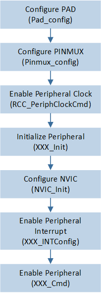
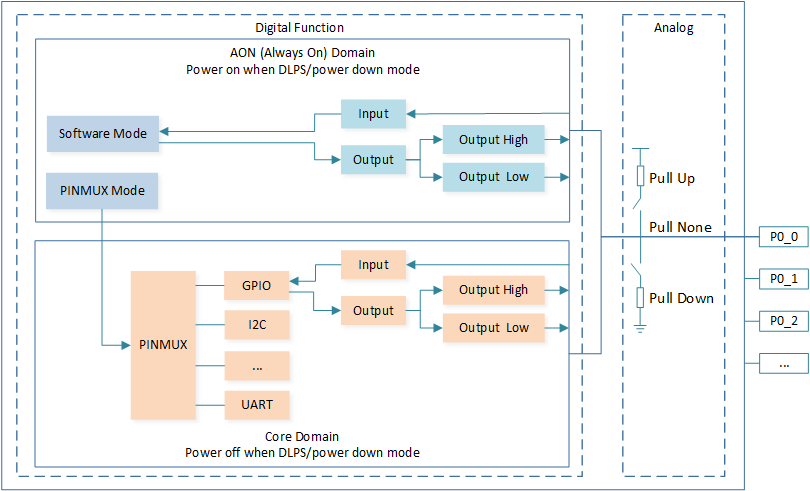

General Introduction
The document primarily introduces an overview of the peripheral sample, covering its Requirements, Configuration, Building and Downloading, Experimental Verification and Code Overview.
The document offers a detailed and comprehensive guide, covering every aspect from environment setup to code implementation, to help developers quickly get started with and test the peripheral sample.
Requirements
The sample supports the following development kits:
Hardware Platforms |
Board Name |
|---|---|
RTL87x2G HDK |
RTL87x2G EVB |
For more requirements, please refer to Quick Start.
Configuration
Users can refer to the Configuration in each peripheral sample for more detailed configuration information, including function configuration and pin definitions.
Building and Downloading
The samples can be found in the SDK folder:
Project file: samples\peripheral\xxx\xxx\proj\rtl87x2g\mdk
Project file: samples\peripheral\xxx\xxx\proj\rtl87x2g\gcc
To build and run the sample, follow the steps listed below:
Open sample project file.
To build the target, follow the steps listed on the Generating App Image in Quick Start.
After a successful compilation, the app bin
app_MP_xxx.binwill be generated in the directorymdk\binorgcc\bin.To download app bin into EVB board, follow the steps listed on the MP Tool Download in Quick Start.
Press reset button on EVB board and it will start running.
Experimental Verification
Users can refer to the Experimental Verification in each peripheral sample for more detailed verification flow and result.
Code Overview
This section introduces the source code directory and initialization, including the peripheral initialization and a description of the functionality implementation flow.
Source Code Directory
This section describes the project directory and structure. The directory for project file and source code are as follows:
Project directory:
sdk\samples\peripheral\xxx\xxx\projSource code directory:
sdk\samples\peripheral\xxx\xxx\src
Source files are currently categorized into several groups as below:
└── Project: xxx sample project name
└── secure_only_app
└── Device includes startup code
├── startup_rtl.c
└── system_rtl.c
├── CMSIS includes CMSIS header files
├── CMSE Library Non-secure callable lib
├── lib includes all binary symbol files that user application is built on
├── xxx.lib
└── rtl87x2g_io.lib
├── peripheral includes all peripheral drivers and module code used by the application
├── rtl_rcc.c
├── rtl_pinmux.c
└── rtl_xxx.c peripheral driver source files that may be required, such as rtl_gpio.c
└── APP includes the ble_peripheral user application implementation
├── main_ns.c
└── io_xxx.c sample application source files that may be required, such as io_gpio.c
Initialization
When the system is powered on or reset, the main function is called to execute the following initialization functions:
int main(void)
{
/* Enable Interrupt */
__enable_irq();
xxx_demo();
while (1);
}
The xxx_demo() function serves as the entry point, which varies in different sample projects. For example, in the ADC sample, the entry function is adc_demo().
The xxx_demo() function primarily implements peripheral initialization and application sample.
Peripheral initialization mainly consists of board_xxx_init() and driver_xxx_init() functions.
The
board_xxx_init()is responsible for PAD and PINMUX configuration.The
driver_xxx_init()handles clock configuration, peripheral initialization parameter configuration, interrupt configuration and enabling the peripherals etc.
Details about application sample descriptions are provided in each peripheral sample.
void adc_demo(void)
{
...
/* Configure pad and pinmux firstly! */
board_adc_init();
/* Initialize adc peripheral */
driver_adc_init();
...
}
Initialization Flow
Below is the common flow for peripheral initialization. While different peripherals generally follow this common flow, any specific variations for certain peripherals will be explained in their respective sample.
Peripheral initialization mainly consists of the following components:
Configure PAD and PINMUX.
Enable peripheral clock.
Initialize peripheral.
Configure NVIC & Enable peripheral interrupt if necessary.
Enable peripheral.
The initialization flow is shown in the following figure, where 'XXX' is the name of the peripheral being initialized, such as GPIO, I2C, or SPI.

Peripheral Initialization Flow
PAD Configuration
PAD refers both to the pins extending from the chip package and to the hardware circuits used to control their functions and characteristics. Its main functions include:
Configure software mode or pinmux mode;
Configure pull-up, pull-down, or floating state, and configuring strong or weak resistors;
Wake-up functionality: since the PAD circuits is located in the AON domain, it remains powered even in low power mode, allowing it to operate normally. Therefore, PADs are often used to wake up the system in low power mode.
When software mode is configured, the PAD can be configured for output or input, and set to output either a high or low level.
Call the Pad_Config() function to configure software mode or pinmux mode, pull up or pull down or pull none, output or input, and output high or low level.
Pad_Config(P0_5, PAD_SW_MODE, PAD_IS_PWRON, PAD_PULL_NONE, PAD_OUT_ENABLE, PAD_OUT_HIGH);
Block Diagram of the PAD and PINMUX is below:

Block Diagram of the PAD and PINMUX
PINMUX Configuration
PINMUX is the abbreviation for pin multiplexing. Because the SoC has a limited number of pins, pin multiplexing allows the SoC to use the limited pins for various functions. Typically, each PAD can be multiplexed to serve any peripheral function.
Call the Pinmux_Config() function to select PAD_PINMUX_MODE, and call the Pinmux_Config() function to select the peripheral function, such as DWGPIO, only then will the pin have the peripheral capability.
/* Configure Pin P0_5 as GPIO function */
Pad_Config(P0_5, PAD_PINMUX_MODE, PAD_IS_PWRON, PAD_PULL_NONE, PAD_OUT_ENABLE, PAD_OUT_HIGH);
Pinmux_Config(P0_5, DWGPIO);
Note
It is forbidden to set different PADs as the same peripheral function (except DWGPIO) at the same time. For example, setting P0_0 and P0_1 as UART0_TX simultaneously is not allowed.
Clock Configuration
Before initializing the peripherals, it is necessary to enable the peripherals clock.
Call the RCC_PeriphClockCmd() function to enable the peripherals clock.
RCC_PeriphClockCmd(APBPeriph_GPIO, APBPeriph_GPIO_CLOCK, ENABLE);
Initialize Peripheral
When initializing a peripheral, define an initialization structure and configure its parameters according to your needs to achieve the desired functionality.
Then call the XXX_Init function to initialize the peripheral.
GPIO_InitTypeDef GPIO_InitStruct;
GPIO_StructInit(&GPIO_InitStruct);
GPIO_InitStruct.GPIO_Pin = GPIO_PIN;
GPIO_InitStruct.GPIO_Mode = GPIO_DIR_IN;
...
GPIO_Init(GPIO_PORT, &GPIO_InitStruct);
Interrupt Configuration
Call the NVIC_Init() function to enable IRQ interrupt.
NVIC_InitTypeDef NVIC_InitStruct;
NVIC_InitStruct.NVIC_IRQChannel = GPIO5_IRQ;
NVIC_InitStruct.NVIC_IRQChannelPriority = 5;
NVIC_InitStruct.NVIC_IRQChannelCmd = ENABLE;
NVIC_Init(&NVIC_InitStruct);
Note
User IRQ priority should be set between 2 and 6 ( priorities 0 and 1 are reserved for interrupts with very high real-time requirements and may be affected by the OS; priority 7 is reserved for system PendSV/SysTick).
Enable Peripheral
Call the XXX_Cmd function to enable corresponding peripheral feature.
ADC_Cmd(ADC, ADC_ONE_SHOT_MODE, ENABLE);
Deinitialize Peripheral
Call the XXX_DeInit function to deinitializes the peripheral registers to their default values.
GPIOx_DeInit();